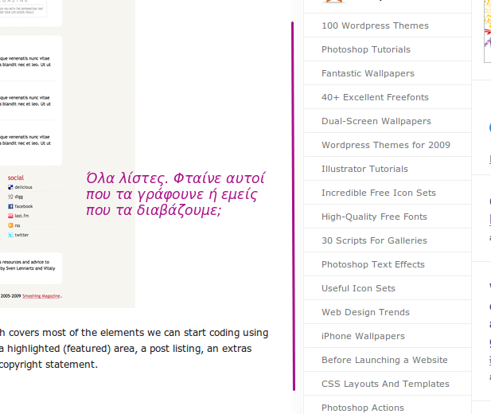

Οι λίστες κάποτε είχαν πλάκα. Πλέον όμως, τα περισσότερα site που διαβάζω έχουν ένα άρθρο-λίστα ανά τρία post. Ε, τις σιχάθηκα πλέον. Οι λίστες με τέτοια συχνότητα δεν είναι ποιοτικό περιεχόμενο. Είναι σαν spam. Είναι εύκολο να τις αντιγράψεις και εύκολο να τις διαβάσεις. Το ακόμα πιο εύκολο για μένα είναι να πατήσω unsubscribe.
Δεν θέλω τι λίστα με τα 2000 καλύτερα application. Δεν έχει καμία αξία αυτό για τον αναγνώστη. Αν είναι έτσι, καλύτερα να ψάξω μόνος μου. Θέλω να μου πεις τα τρία με τα οποία έχεις πραγματικά δουλέψει κύριε αρθρογράφε και να μου εξηγήσεις και τους λόγους.
Δεν με νοιάζει πλέον να μου κάνεις άλλη μια λίστα που σίγουρα έχει κάνει καλύτερα το Smashing Magazine και άλλα 10 παρόμοια λιστοσάιτ, από την οποία θα μάθω για 1 νέο πράγμα. Οι λίστες είναι το fast-food του blogging και γενικώς του posting.

Εδώ στο Webz έχω κατά καιρούς λιστάρει. Αλλά νομίζω πολύ συνετά, πολύ προσωπικά και όχι με αυτή τη μαζική μανία του να χωρέσω τα πάντα. Δεν έχει νόημα αυτό. Υπάρχει το google, το delicious, το digg και δεν ξέρω τι άλλο για να ψάξω ανάμεσα σε δεκάδες ή και παραπάνω. Θέλω ανάλυση, άποψη και εμπειρία. Λίστες έχω και στα to-do μου, δεν θέλω να γίνω ένας αυτόματος αναγνώστης λιστών.
Όταν λέω ανάλυση δεν εννοώ 3000 λέξεις διπλωματική πάνω στο firebug. Γράψε μου 2 λόγια που μάλλον δεν θα έχει διαβάσει το 80% των αναγνωστών σου και 5 κοινοτοπίες για να είναι όλοι μέσα. Όχι πάλι όμως λίστα με τα 10 καλύτερα developing FF plugins. Τα ξέρουμε. Είναι το firebug, το web developer bar, το colorzilla, το fireftp, το .... Στην τελική πάω στο site της mozilla και κάνω sort ανά popularity στην κατηγορία developing.
Όπως είπα, οι λίστες έχουν πλάκα αλλά το έχουμε παρακάνει. Με μέτρο και τρόπο έχουν αξία αλλιώς είναι ευγενικό spam. Στο Google Reader έχω 1000 νέα unread τη μέρα. Δεν θα λυπηθώ να παρατήσω τα λιστοσάιτ. To Smashing Magazine ήδη το χαιρέτησα εδώ και εβδομάδες... και πρέπει να παραδεχτώ ότι το έκανε πολύ καλά το παιχνίδι με τις λίστες.
εικόνα άρθρου από koalazymonkey